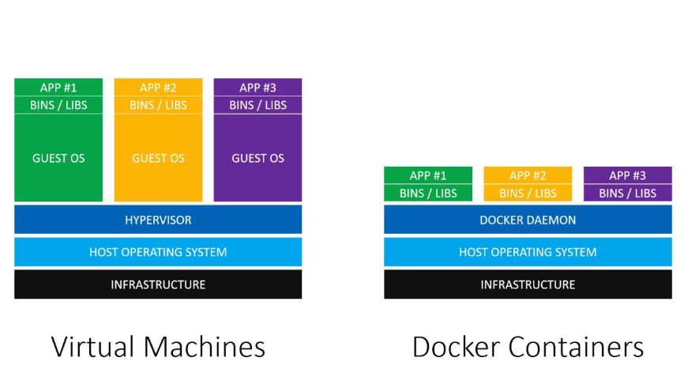
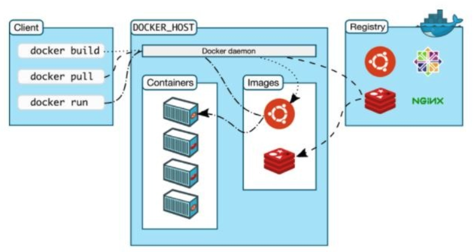
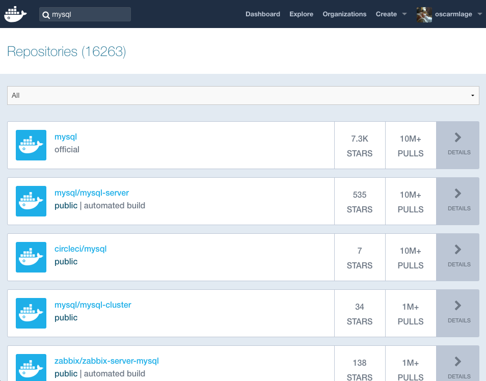
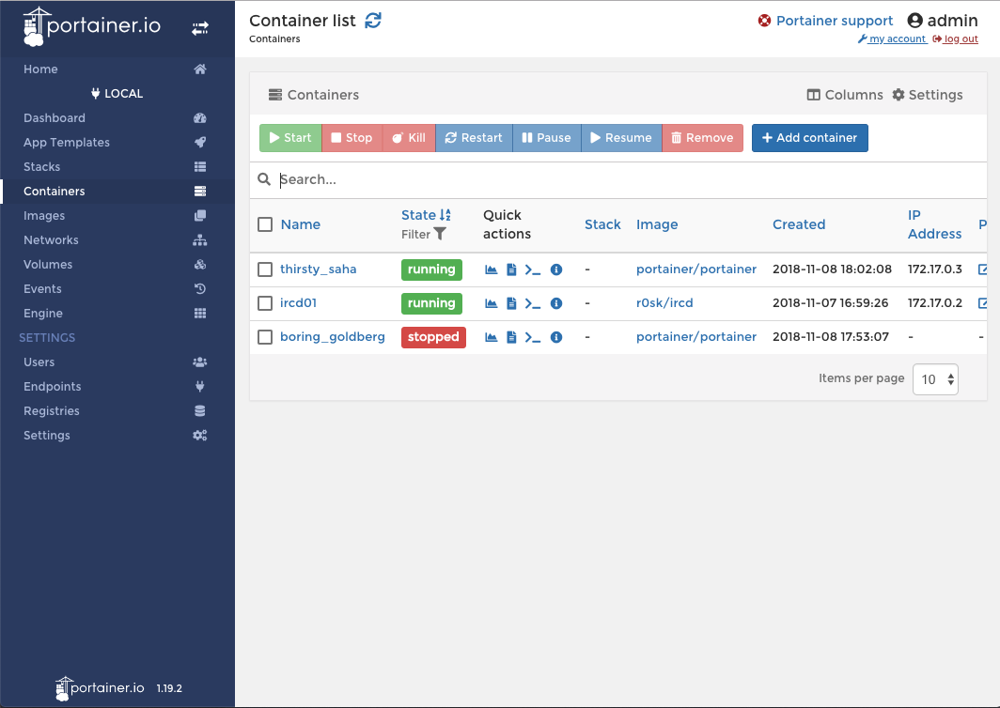

<!doctype html>
<html>
<head>
    <meta charset="utf-8">
    <meta name="viewport" content="width=device-width, initial-scale=1.0, maximum-scale=1.0, user-scalable=no">
    <title>Docker all the things!</title>
    <link rel="stylesheet" href="css/reveal.min.css">
    <link rel="stylesheet" href="css/black.min.css">
    <link rel="stylesheet" href="css/zenburn.css">
    <link rel="stylesheet" href="css/custom.css">
</head>

<body>
<div class="reveal">
    <div class="slides">
        <section data-markdown
            data-separator="^\n----\n$"
            data-separator-vertical="^\n---\n$"
            data-background-image="images/dockerbg.png">
            <script type="text/template">
            <!-- .slide: data-background-color="#242177" -->
            <!-- .slide: data-background-size="0" -->
            

            ### Docker all the things!

            [@oscarmlage](https://twitter.com/oscarmlage)

            ----

            ## ¿Qué es Docker?

            Seguro que has leído mucho sobre `Docker` porque:

            * Está de moda [[1](https://trends.google.es/trends/explore?geo=ES&q=Docker,ansible)].
            * Tiene subreddit propio [[2](https://www.reddit.com/r/docker/)].
            * Sale mucho en hackernews [[3](https://news.ycombinator.com)] (más de 225k referencias [[4](https://www.google.es/search?q=hackernews+docker)]).
            * Va a cambiar para siempre el mundo de la programación.
            * Va a jubilar a los todos los sysadmins del mundo.

            ----

            

            ----

            ## No, en serio, ¿qué es Docker?

            * Docker es una forma de poner aplicaciones en contenedores.
            * Está construído sobre el kernel de linux y la tecnología linuxcontainers [[1](https://linuxcontainers.org/)], chroot...
            * ¿Contenedores?, Imagina que puedes poner todo lo que le hace falta a tu aplicación para ejecutarse (php, mysql, redis, nginx...) y meterlo en un contenedor.
            * Imagina que puedes llevarte ese contenedor a donde quieras puesto que siempre va a funcionar.

            ----

            ## Dime más, dame más

            * Ese contenedor va a poder usarse tanto en producción como en desarrollo.
            * Desarrollador/es y servidor/es tienen las mismas versiones de todo el software necesario.
            * Es invariable, una vez construido el contenedor, éste no cambia.
            * Diferenciación/separación entre lo variable y lo invariable dentro de un stack (datos vs programas).

            ----

            ## En definitiva

            * De repente los entornos se convierten en muy portables.
            * Inmutables.
            * Y aún encima versionados:
              * Dockerfile completo (más limpio)
              * Dockerfile básico + commits (posibilidad de rollbacks y demás operaciones de un VCS)
            * Aislados y modulares

            ----

            ## ¿Y las Máquinas Virtuales?

            El concepto de Docker es similar al de las VM, pero...

            * Docker es más ligero y rápido, comparte librerías con el sistema
            * VM son lentas y tardan mucho en arrancar
            * Docker no malgasta ni bloquea recursos innecesarios en la máquina

            ---

            * No necesita replicar la capa de S.O., se aprovecha del host.
            

            ----

            ## Partes de Docker

            

            ---

            ## Docker Client

            Cliente o `cli` que ordena comandos contra el `host` o `servidor`:

            * `docker build`
            * `docker run`
            * `docker ps`

            El cliente y el servidor pueden estar instalados en la misma máquina o en máquinas distintas.

            ---

            ## Docker Host

            * `Docker daemon`: controla absolutamente todo y se encarga de ejecutar los comandos que le llegan desde el cli.
            * `Containers`: Aplicaciones que hemos dockerizado (metido en contenedores)
            * `Images` & `Layers`: Distintas capas necesarias para el contenedor

            ---

            ## Docker Registry (opcional)

            * Es un lugar donde almacenar las imágenes y contenedores que luego vamos a "instanciar".
            * Docker Inc. tiene uno público llamado Docker Hub [[1](https://hub.docker.com/)].
            * Lo han dockerizado, así que montar nuestro "Docker Hub" es tan sencillo como lanzarlo:
            ```bash
            $ docker run registry
            ```

            ---

            

            ---

            * Buscamos la imagen de las disponibles en el registry y:

            ```bash
            $ docker run nextcloud
            $ docker run mysql
            $ docker run timhaak/plex
            $ docker run gogs/gogs
            $ docker run linuxserver/transmission
            ```

            Ejemplo ([portainer](https://hub.docker.com/r/portainer/portainer/)):

            ```bash
            $ docker images
            $ docker pull portainer/portainer
            $ docker run portainer/portainer # o mejor:
            $ docker run -d \
                -p 9000:9000 \
                -v /var/run/docker.sock:/var/run/docker.sock \
                portainer/portainer
            ```

            ---

            Debería aparecer algo como así:

            

            ----

            ## Instalación de Docker

            Para "cocinar" nuestros contenedores:

            * En Linux (Debian, Ubuntu, Mint...), ojo ppa:
              ```bash
              $ apt install docker-ce
              ```
              * Instalar desde paquete [[1](https://download.docker.com/linux/ubuntu/dists/)].
              * Oneliner bash "molón":
              ```bash
              $ curl -fsSL https://get.docker.com -o get-docker.sh
              $ sudo sh get-docker.sh
              ```
            * En MacOS:
              * Descargar e instalar [[1](https://store.docker.com/editions/community/docker-ce-desktop-mac)], usa VirtualBox.
              * Pedirme el playbook ansible ;)
            * Para otros Linux y Windows... ver instrucciones oficiales [[2](https://docs.docker.com/install/)].

            ----

            ## Esqueleto de un Dockerfile (1)

            ```bash
            FROM debian:jessie
            MAINTAINER Óscar M. Lage <info@oscarmlage.com>

            RUN echo "=> Configuring and installing base + ngircd"
            RUN apt-get update -y
            RUN apt-get install -y grc htop net-tools
            RUN apt-get install -y --no-install-recommends ngircd

            EXPOSE 6667

            CMD ["/etc/init.d/ngircd start"]
            ```

            ---

            ## Esqueleto de un Dockerfile (2)

            ```bash
            FROM debian:jessie
            MAINTAINER Óscar M. Lage <info@oscarmlage.com>
            RUN \
                echo "=> Configuring and installing base + ngircd" && \
                apt-get update -y && \
                apt-get install -y grc htop net-tools && \
                apt-get install -y --no-install-recommends ngircd && \

            EXPOSE 6667

            CMD ["/etc/init.d/ngircd start"]
            ```

            ---

            ## Ejemplo real: Flask

            ```bash
            FROM debian:jessie
            MAINTAINER Óscar M. Lage <info@oscarmlage.com>

            RUN apt-get update -y
            RUN apt-get install -y python-pip python-dev build-essential

            COPY . /app
            WORKDIR /app

            RUN pip install -r requirements.txt

            ENTRYPOINT ["python", "/app/app.py"]

            EXPOSE 5000
            ```

            ----

            ## Build

            En el directorio donde se encuentre el `Dockerfile`:

            ```bash
            $ docker build -t user/name:tag .
            $ docker build -t r0sk/flask .
            $ docker build -t r0sk/flask:latest .
            ```

            Una vez acabado se crea la imagen y se registra localmente:

            ```bash
            $ docker images
            REPOSITORY   TAG       IMAGE ID       CREATED        SIZE
            r0sk/flask   latest    826d737d4d4a   25 hours ago   268MB
            ```

            ----

            ## Run / PS

            ```bash
            $ docker run -d -p 5000:5000 r0sk/flask
            $ docker run -d -p 5000:5000 --name flasky r0sk/flask
            ```

            ----


            ## Partes variables y volúmenes

            Diferencia entre variable e invariable:

            ```bash
            $ docker run -d \
                -p 5000:5000 \
                --name flasky \
                r0sk/flask
            $ docker run -d \
                -p 5000:5000 \
                -v /Users/oscar/code/cowlab/docker/demo:/app \
                --name flasky \
                r0sk/flask
            ```

            ```bash
            $ docker volume ls
            ```

            ----

            ## Exec & logs

            ```bash
            $ docker exec -it flasky bash
            $ docker logs -f flasky
            ```

            ----

            # Resources

             * [Docker](https://www.docker.com/)
             * [Docs](https://docs.docker.com/)
             * [DockerHub](https://hub.docker.com)

            ----

            <!-- .slide: data-background="#242177" -->
            <!-- .slide: data-background-size="0" -->
            

            # Thanks!

            </script>
        </section>

    </div>
</div>

<script src="js/head.min.js"></script>
<script src="js/reveal.min.js"></script>
<script>
    Reveal.initialize({
        history: true,

        dependencies: [
            { src: 'js/marked.js' },
            { src: 'js/markdown.min.js' },
            { src: 'js/highlight.min.js',
              async: true, callback: function() { hljs.initHighlightingOnLoad(); } }
        ],

        width: "60%",
        height: "100%",
        margin: 0,
        minScale: 1,
        maxScale: 1,
        controls: true,
            progress: true,
            center: true,
            transition: 'slide'
    });
</script>
</body>
</html>